AI 를 대하는 세 종류의 사람
Dan Koe 는 앞으로 사람이 AI 를 대하는 태도에 따라 세 부류로 갈린다고 봐요. 앞의 두 부류가 되지 않는 게 다음 10년의 핵심이라고 해요.
첫째는 순수주의자예요. AI 와는 아무 상관도 없고 싶어 하고, 자연이나 단순한 삶, 화면 없는 생활로 물러나요. 그는 이들이 진심인지, 요즘 멋있어 보여서 그러는 건지 알 수 없다고 꼬집어요. 둘째는 자동인형·사이보그예요. 아래 장면에서 두 번째 카드가 이들이에요. '결정을 밖에', '최적화 중독'이라는 꼬리표 아래, 계기판으로 둘러싸인 방 한가운데 사람이 서 있어요.
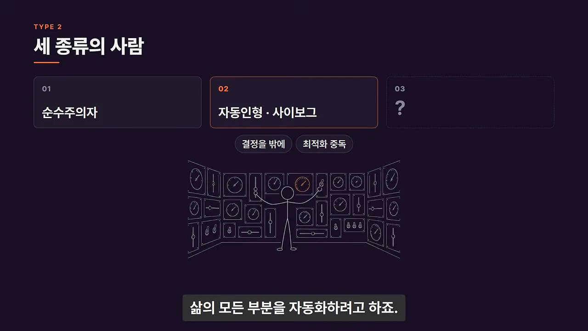
| 부류 | AI 를 대하는 태도 | 버리는 쪽 |
|---|---|---|
| 순수주의자 | AI 를 거부하고 자연·단순한 삶으로 물러나요 | 바깥 세계 (사회·돈·직업) |
| 자동인형·사이보그 | 결정을 다 맡기고 삶 전체를 최적화·자동화해요 | 안쪽 세계 (마음·관계) |
| 다차원적인 사람 | 둘 사이를 오가며 AI 를 지렛대로 써요 | 버리지 않아요 |
현실의 네 칸 중 절반을 버려요
그는 두 부류가 왜 틀렸는지 켄 윌버의 통합 이론에서 빌린 네 칸으로 설명해요. 아래 화면 왼쪽 표에서 위 두 칸이 '내 마음'과 '내 몸', 아래 두 칸이 '관계'와 '사회'예요. 오른쪽에 적힌 두 줄이 요점이에요. 순수주의자는 바깥 세계를, 사이보그는 안쪽 세계를 버려요.
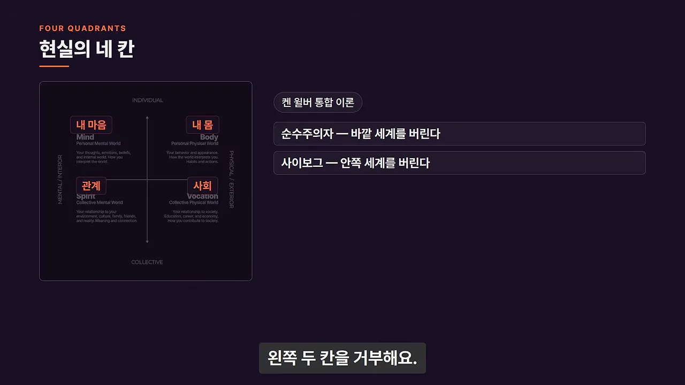
한쪽만 키우면 왜 안 될까요. 그는 게임의 스킬 트리를 예로 들어요. 아래 그림에서 사람은 팔 하나만 터무니없이 커졌고, 오른쪽 막대는 '힘'만 정점이고 '지능'은 거의 비어 있어요. 게임에서는 힘에 점수를 일정 이상 넣으면 지능에도 넣도록 강제해요. 현실도 같아서, 돈에만 몰두하면 어느 순간 마음이나 몸을 돌봐야 더 나아갈 수 있다고 해요.
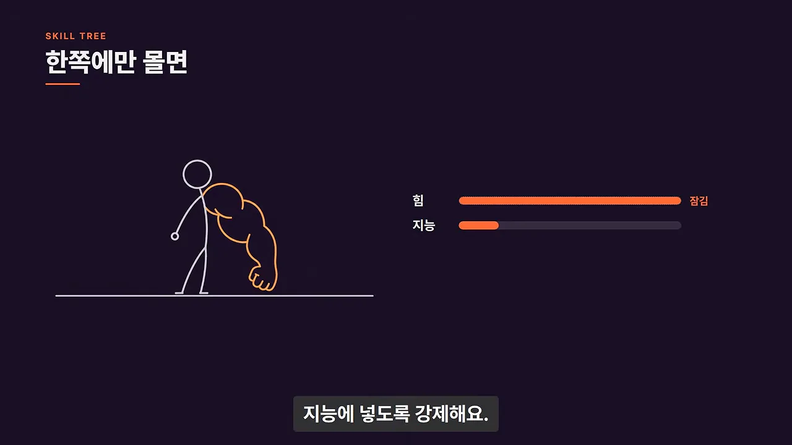
그래서 결론은 "둘 다 틀렸다"예요. AI 를 완전히 거부할 필요도, 완전히 받아들일 필요도 없다는 거예요.
I think that there is a third option and that is to become multi-dimensional.
세 번째 선택지가 있다고 생각해요. 다차원적인 사람이 되는 거예요.
— 원래 영상 (이 영상 02:01 부근)
직업은 250년짜리 발명품
세 번째 길을 그는 '새로운 르네상스형 인간', '디지털 르네상스형 인간'이라고 불러요. 지금이 두 번째 르네상스 한가운데라는 거예요. 아래 화면에 그 정의가 한 문장으로 떠요. 세 가지가 자리를 바꾼다고 해요.
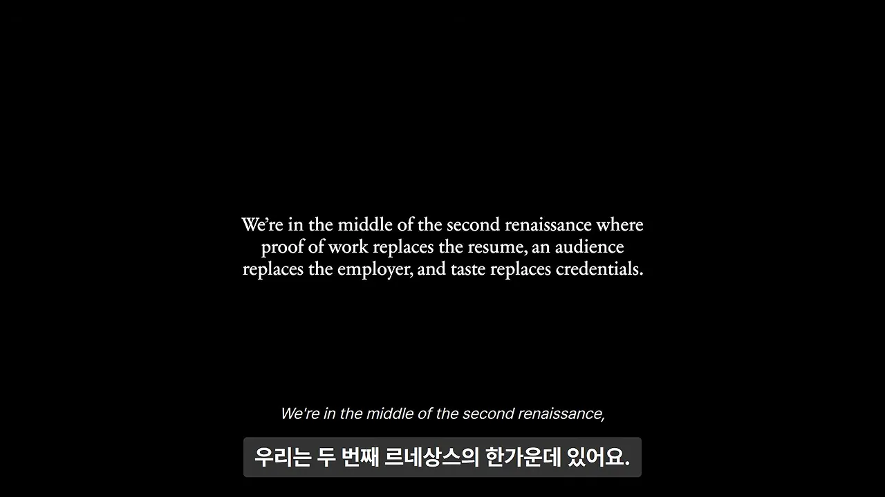
| 예전 | 두 번째 르네상스 |
|---|---|
| 이력서 | 작업 증명 — 실제로 만들어 보여 준 것 |
| 고용주 | 오디언스 — 내 작업을 보는 사람들 |
| 자격증 | 취향 |
직업은 생긴 지 250년밖에 안 됐어요
그는 우리 시대의 가장 큰 비극이 '기계 같은 삶만이 성공의 길'이라고 속아 온 거라고 말해요. 한 분야를 고르라는 말, 관심사가 많은 건 결함이라는 말을 듣고 자랐어요. 20년 전엔 그럴듯했지만 지금은 그저 대체 가능하다고 느낄 뿐이에요. 그리고 아래 화면처럼, 오늘날 같은 '직업'은 생긴 지 약 250년밖에 안 됐다고 짚어요.
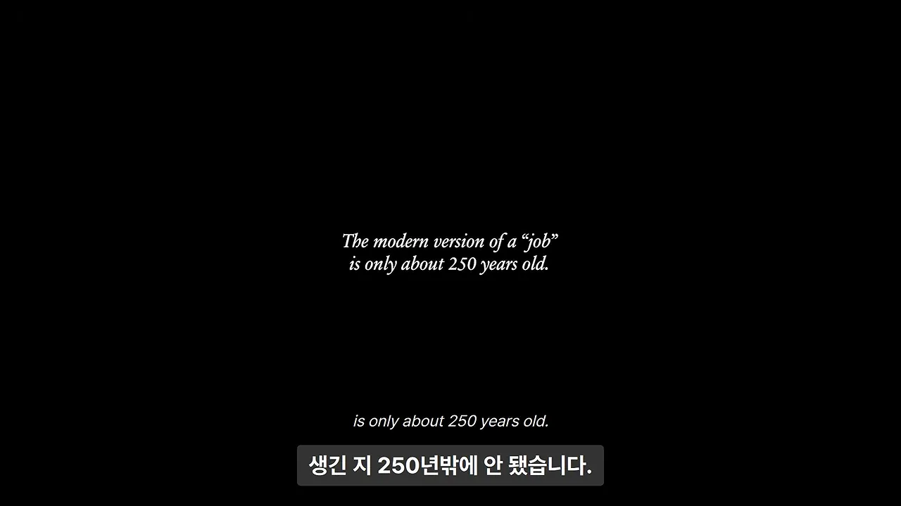
그 전의 이상형은 평생 여러 일을 할 줄 알고 자기 비전을 좇는 자유인이었어요. 한 가지 반복 작업만 하는 사람은 노예였고요. 장인, 농부, 해적은 일의 한 조각이 아니라 전체를 굴릴 줄 알았어요. 생각하는 사람이자 만드는 사람, 예술가이자 과학자였어요.
다빈치의 공방과 공장 모델
내레이션은 다빈치를 예로 들어요. 아래 화면 가운데 사람에게서 네 갈래 선이 이젤, 인체, 톱니바퀴, 주조 용광로로 뻗어요. 아래 꼬리표가 '해부학·공학·광학·청동 주조'예요. 그림을 배우러 베로키오의 공방에 들어갔다가 이것들을 다 알고 나왔어요. 누구도 이걸 따로따로 학위로 배워야 한다고 말하지 않았어요.
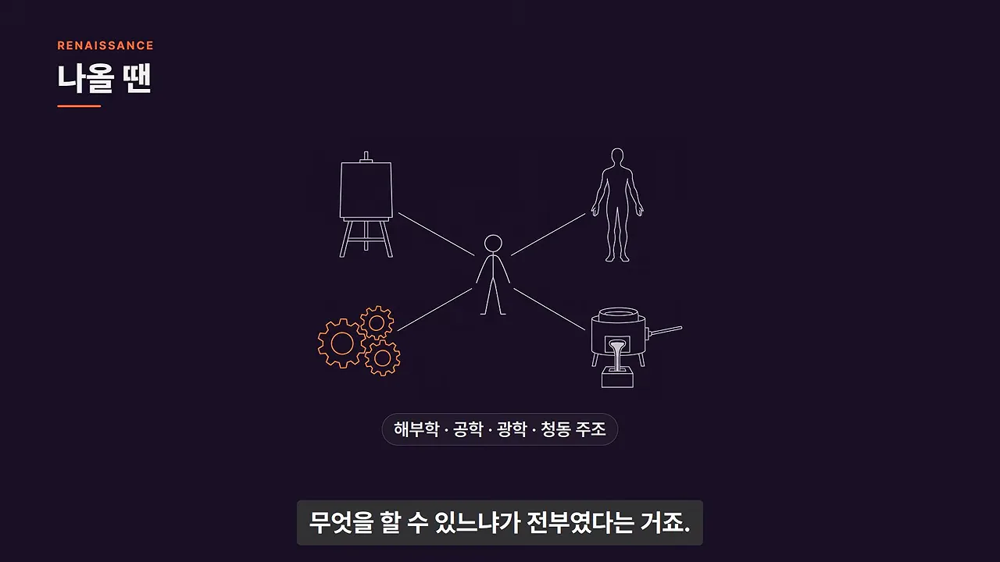
산업화의 공장 모델은 이 이상에서 멀어지게 했어요. 다음 화면은 컨베이어 벨트 앞에 똑같은 사람 넷이 서 있는 그림이에요. 아래 꼬리표 '교육·비판적 사고·주체성·취향'은 공장 모델이 망가뜨린 것들이에요. 그럴 의도는 없었지만 결과가 그랬다고 해요.
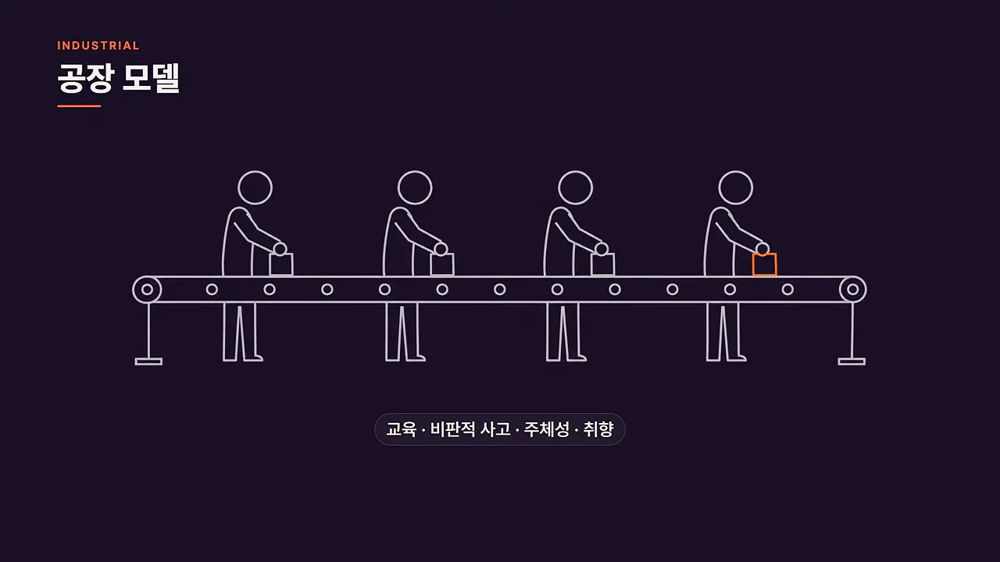
교육도 바뀌었어요. 아래 화면에서 '발견'에 줄이 그어지고 화살표가 '훈련'을 가리켜요. 꼬리표는 '반복 작업', '직선형 커리어'예요. 기하급수적으로 커질 수 있는 커리어 대신 직선형 커리어가 정상이 됐다는 거예요.
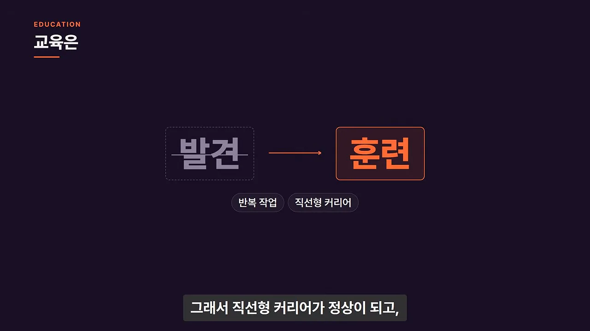
한 사람이 팀 몫을 하는 시대
AI 가 문 앞에 온 지금, 내레이션은 "일의 크기가 달라졌다"고 정리해요. Dan Koe 는 일에 따라 한 사람이 10~50명 팀이 하던 일을 할 수 있다고 말해요. 알려진 모든 정보가 손끝에 있고, 소셜 미디어라는 공짜 유통 채널도 있어요. 미디어와 사람들의 관심, 인간 심리를 이해한다면 1인 미디어 회사, 곧 크리에이터가 될 수 있어요.
그는 여기서 '알려진'이라는 말에 힘을 줘요. AI 가 잘하는 건 이미 알려진 정보예요. 아무도 안 가 본 길을 가면서 경험으로 얻는 새로운 정보는 사람 몫이에요.
Known information, not unknown or novel information that comes from experience.
알려진 정보예요. 경험에서 나오는, 알려지지 않은 새로운 정보가 아니고요.
— 원래 영상 (이 영상 04:31 부근)
사람들은 이미 기계처럼 살아왔어요
AI 가 사고력을 망치고 사람을 기계처럼 만든다는 걱정에 그는 반대로 답해요. 지난 200년 동안 사람들은 이미 반복 작업을 하며 기계처럼 살아왔고, AI 가 바로 그 반복 작업을 가져간다는 거예요. 그 걱정을 그대로 되풀이하는 것 자체가 머릿속에 심어진 프로그램을 따르는 거라고까지 말해요.
그래서 두 번째 르네상스에 합류하는 사람의 일은 셋이에요. 그릇(craft)을 고르고, AI 로 일 전체를 굴리고, 아래 화면의 세 단어 '취향, 방향, 판단'에 집중하는 거예요. 이유도 같은 화면에 적혀 있어요. AI 의 결과물에는 관점이 없어요.
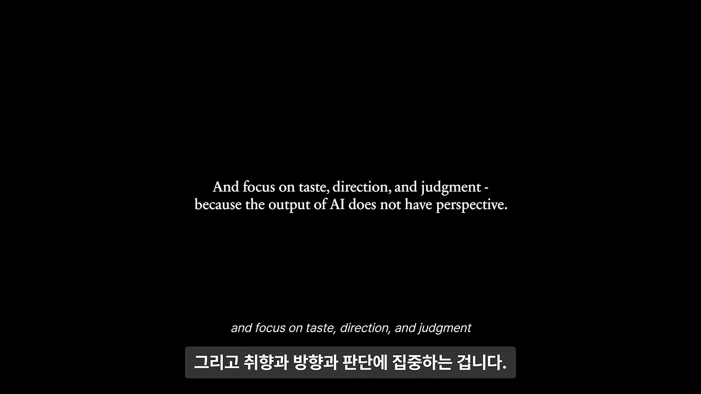
걸어다니는 모순, 두 극단 사이
내레이션은 그가 제안하는 사람을 '걸어다니는 모순'으로 요약해요. 아래 그림의 막대 인간은 한 손에 아령, 한 손에 책을 들었어요. 근육질 지식인, 캐주얼한 억만장자처럼 남들이 쉽게 상자에 넣을 수 없는 사람이 가장 흥미롭고 가치 있다는 거예요.
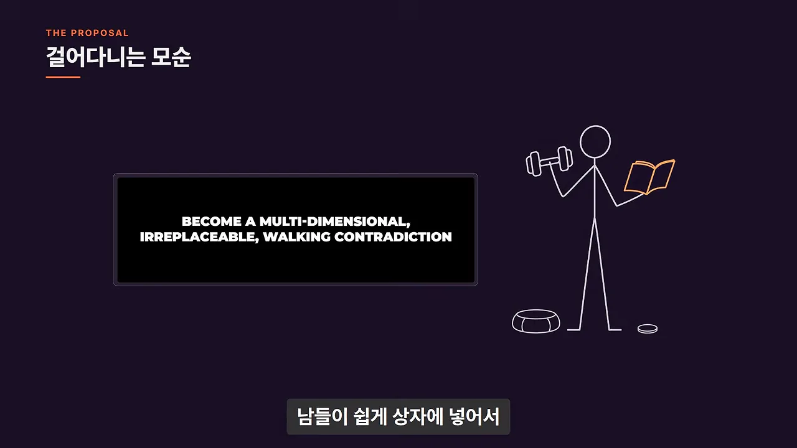
이런 사람은 두 극단 사이를 오가요. 아래 화면 왼쪽은 나무 아래서 책 읽는 사람이고 꼬리표가 '화면 없이·책·공원', '열린 집중'이에요. 오른쪽은 컴퓨터 앞 사람이고 'AI 네이티브 생산성', '좁고 깊은 몰입'이에요. 하나는 현실과 더 연결된 열린 집중, 하나는 몰입 상태로 일을 해치우는 집중이에요. 그는 둘 다 즐거운 삶의 방식이라고 해요.
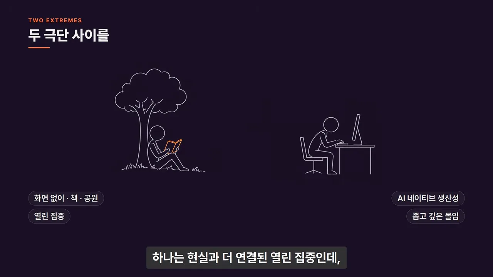
의미는 대비에서 와요 — 다윈의 하루
왜 두 극단을 오가야 할까요. 그는 의미와 충족감이 평평하게 균형 잡힌 삶에서 오지 않고 대비에서 온다고 말해요. 늘 행복하면 그건 행복이 아니라 그냥 평범한 상태가 돼요. 그러면 더 센 자극이 필요해지고, 사람들이 휴대폰을 못 내려놓는 이유도 평범하게 행복한 삶이 너무 지루해서라고 봐요. 아끼는 무언가를 위해 실패하고 애써 본 사람이 그 반대편에서 진짜 행복을 알아요.
그래서 이기는 사람은 깊게 일하고 깊게 쉬어요. 자기 일에 강하게 몰입하고, 그다음엔 완전히 쉬어요. 그는 이 리듬이 세계에서 가장 창의적인 사람들의 하루와 같다며 아래 그래픽을 보여 줘요. '유명한 창작자들의 하루 루틴'이라는 제목 아래, 사람마다 하루 24시간을 색 막대로 칠했어요.
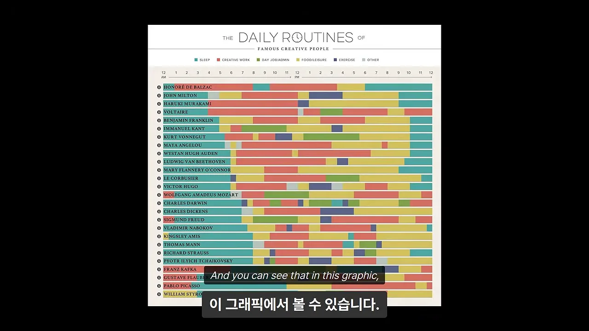
다윈은 하루 세 시간 일했어요
그가 가장 좋아하는 예는 찰스 다윈이에요. 평생 책을 19권 썼는데, 하루 일정을 보면 그 정도 결과물이 나온 게 놀랍다고 해요. 영상이 읽어 준 다윈의 하루를 시간 축에 옮기면 아래와 같아요. 주황 막대 두 개가 집중 창작 시간이고, 동그라미는 산책이에요.
두 번째 산책은 샌드워크라는 길에서 했어요. 아래 사진이 그 길이에요. 나무 사이로 자갈길이 이어져요. 영상은 다윈이 생각하고 돌아보려고 직접 만든 4분의 1마일(약 400미터)짜리 자갈길이라고 소개해요. Dan Koe 도 컴퓨터 앞의 강한 몰입과 열린 창의적 집중을 산책으로 맞춘다고 해요.
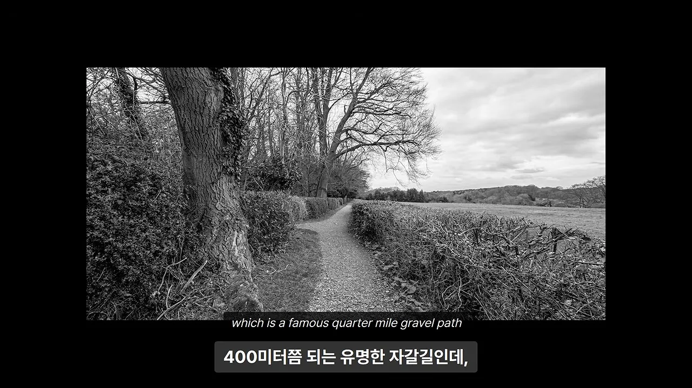
그는 이렇게 묻고 넘어가요. 하루 세 시간으로 인류에 크게 기여하고 책을 19권 썼다면, 이 길에 온전히 몰두한 사람은 무엇을 할 수 있을까요.
한 그릇과 스킬 스택 3층
내레이션은 이 부분을 짧게 요약해요. Dan Koe 는 지금 쓸 수 있는 자원이라면 다윈이나 다빈치 같은 사람이 열 배는 나올 거라고 봐요. 아래 화면에서 책상 앞 사람들 사이에 주황색 한 명이 서 있고, 오른쪽 위에 '10배'가 크게 적혀 있어요. 꼬리표는 '다윈·다빈치·소크라테스'예요.
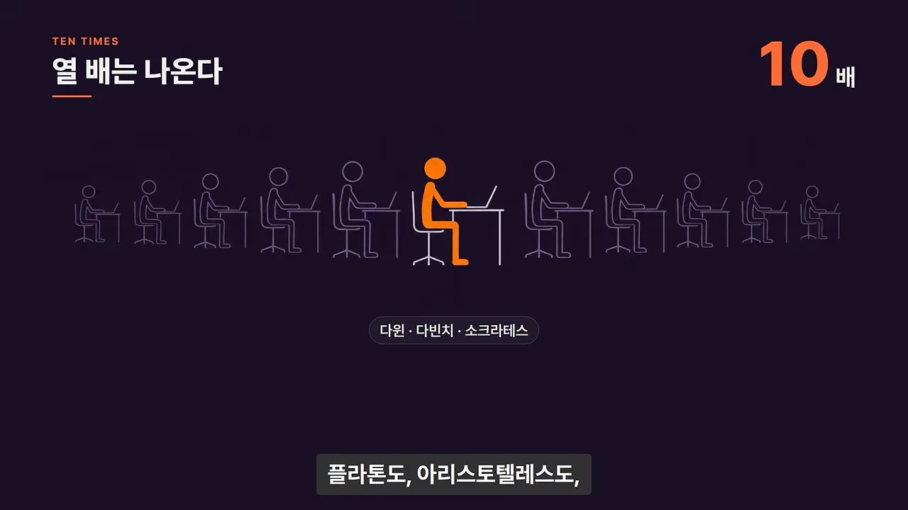
앞으로 번성하는 사람은 다윈 같은 리듬으로 일하면서도 10~20명분의 결과를 내요. 기술과 AI 에이전트를 곁에 둔 1인 비즈니스로요. 그는 이 방향을 가리키는 말로 나발 라비칸트의 말을 인용해요. 아래 카드에 적힌 문장이에요.
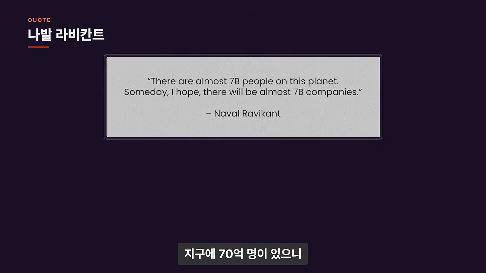
공장 이전에는 일이 끝날 때까지 일했지, 8시간 근무가 끝날 때까지 일하지 않았어요. 배우는 방식도 달랐어요. 아래 그림처럼 작업대 앞에서 어른이 아이 손을 잡고 함께 만들어요. 꼬리표 '도제 → 직인'이 그 과정이에요. 표준 교육과정과 암기 시험 대신, 잘하는 사람을 따라 하며 자기 취향과 판단이 생길 때까지 공방에서 배웠어요.
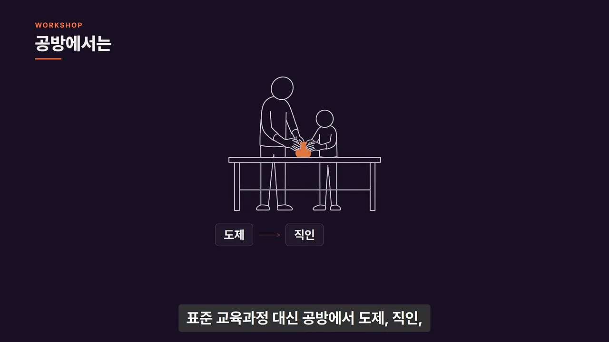
다 하되, 한 그릇에 담아요
그럼 새로운 르네상스형 인간은 어떻게 될까요. 답은 "다 하라"예요. 아래 그림에서 붓, 렌즈, 톱니바퀴, 망치, 잎사귀가 한 그릇으로 쏟아져 들어가요. 꼬리표가 '글쓰기·디자인·마케팅·영상·운동'이에요. 무엇이든 호기심이 가는 대로 하되, 그 힘을 하나의 그릇(craft)에 모아요. 내가 알려지고 싶은 한 가지 작업이요.
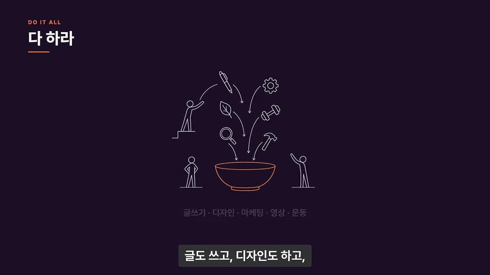
그는 AI 에 반발하는 예술가와 작가 대부분이 스킬이나 도구, 자기 작업 방식을 자기 자신과 동일시해서 그런다고 봐요. AI 그림이 진짜냐는 논쟁을 하는 동안 정작 창작은 안 하고 있다는 거예요. 그러니 그릇은 잘 골라야 해요. 아래 벤 다이어그램의 세 원이 기준이에요. '내가 관심 있는 것', '나만 할 수 있는 것', '남이 돈을 낼 것'이 겹치는 자리예요.
대체 불가능한 스킬 스택 3층
여기서부터는 원본 클립이에요. 그가 말하는 세 층을 표로 정리하면 이래요.
| 층 | 무엇 | 예 | 그가 붙인 역할 |
|---|---|---|---|
| 1층 | 사람의 본성, 심리 | 마케팅, 세일즈, 글쓰기, 말하기, 심리학 | 남이 나에게 돈을 낼 것 |
| 2층 | 푹 빠진 분야와 고유한 관심사 | 철학, 운동, 디자인, 코딩, 영양학 | 내가 아끼고 나만 할 수 있는 것. 사람들이 다른 사람 말고 나를 찾는 이유 |
| 3층 | 도구 기술 | 이메일 마케팅 소프트웨어, 포토샵, 노코드 웹사이트 디자인, 소셜 미디어 운영, 직접 코드 치기 | 예전엔 가장 중요했지만 이제 AI 가 쉽게 해요 |
1층은 사람들의 관심이 어떻게 움직이는지 이해하는 거예요. 무엇이 가치 있어 보이는지는 주관적이고 세상과 함께 바뀌어요. 그는 AI 가 콘텐츠를 다 쓰면 내 콘텐츠가 가치를 잃는다는 걱정이 틀렸다고 봐요. AI 콘텐츠는 다 비슷해서 사람들이 금방 익숙해지고 더는 가치를 못 느껴요. 그걸 아는 사람이 머리를 써서 새로운 걸 만들어요. 마케팅과 제품, 사업은 끝없는 시행착오라서, 혼자 성공하려는 사람은 관심 분야가 아니어도 이 층을 익혀야 해요.
2층에서 고유함은 관심사의 조합에서 나와요. 그의 예가 '근육질 철학자'예요. 직접 몸으로 이론을 시험하는 철학자가 안락의자 철학자보다 가치 있고 흥미로워요. 거기에 마케팅과 세일즈, 사업과 제품까지 붙으면 막을 수 없다고 해요. 근육만 있거나 철학만 있으면 그냥 보기 좋거나 생각이 멋진 사람에서 끝나요.
3층은 배우는 데 시간과 노력이 들어서 가장 중요했던 층이에요. 이제 AI 가 쉽게 하니 도구 숙련에 미래를 걸면 안 돼요. 정체성이 포토샵 같은 도구라면 몇 년 남았다고까지 말해요. 세 층과 앞의 벤 다이어그램을 함께 놓으면 이렇게 이어져요.
내레이션은 이걸 '3층이 먼저'라는 화면으로 정리해요. 아래 화면에서 3층 '도구·기술 스킬'만 흐리게 꺼졌고, 2층과 1층은 그대로 남아 있어요. 아래 꼬리표가 '배우는 시간 = 가치'예요. 배우는 데 시간이 들어서 가치 있던 층이 가장 먼저 사라진다는 뜻이에요.
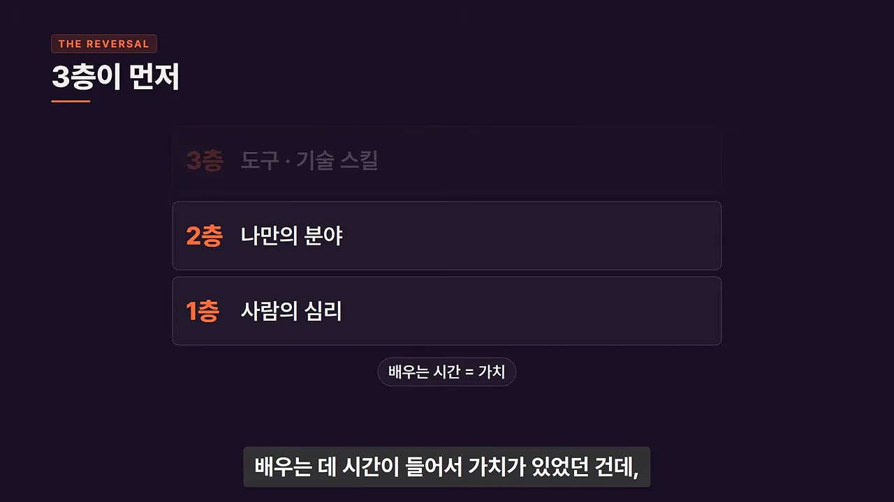
그는 이게 모든 기술 전환에서 반복된 패턴이라고 말해요.
The mechanical part of the skill gets automated and the human role moves up a layer.
스킬의 기계적인 부분은 자동화되고, 사람의 역할은 한 층 위로 올라가요.
— 원래 영상 (이 영상 13:04 부근)
필경사는 편집자가 됐고, 손으로 베를 짜던 직공은 기계 운전자가 됐어요.
먼저 해 보고, 그다음에 배워요
그릇을 골랐다면 다음은 배우는 법이에요. Dan Koe 는 '위험할 정도로 독학하라'고 말해요. 학교는 걷고, 말하고, 셈하는 법처럼 사회 안에서 살아가는 법을 가르쳐요. 그건 필요하지만, 자기 길을 찾는 법은 가르치지 않아요.
그가 말하는 진짜 교육은 발견이에요. 앞에서 '발견 → 훈련'이었던 화살표가 아래 화면에서는 '훈련 → 발견'으로 뒤집혔어요. 꼬리표가 셋 붙어 있어요. '비전·목표'를 세우고, '시험용 지식 쌓기'가 아니라 그걸 이루는 데 필요한 걸 배우는 과정이에요. 세 번째 꼬리표 '스무 살 → 스물다섯'과 아래의 침대·아령·접시·책상이 도는 고리 그림은 멈춘 사람들이에요. 많은 사람이 그 나이에 배움을 멈추고 같은 하루를 반복해요.
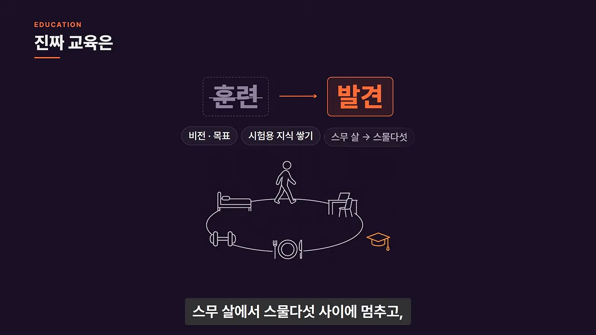
사람들이 멈추는 이유를 그는 이렇게 봐요. 시작하기 전에 방법을 다 알아야 한다고 생각하는데, 순서가 거꾸로라는 거예요. 배우고 나서 하려 들면 강의만 계속 보는 튜토리얼 지옥에 갇혀요. 아래 그림이 두 순서의 차이예요.
배우는 방법은 도제 모델이에요. 스승이나 멘토 밑에서 배우는 거예요. 지금은 책을 펴거나 유튜브를 열면 스승을 찾을 수 있어요. 피드가 시끄럽고 붐비는 건 맞지만, 그래서 비전과 목표가 필요하다고 해요. 비전과 목표는 머릿속 필터처럼 잡음을 걸러 내고 신호를 알아보게 해요. 사업을 만드는 중이라면 유튜브를 열어도 자극적인 오락 영상 대신 사업 영상을 일부러 찾게 된다는 거예요.
What I do care about is if you have a vision, have a goal, work toward that goal, and apply what you learn to problems that come up along the way.
제가 신경 쓰는 건 비전과 목표가 있고, 그 목표를 향해 가면서 생기는 문제에 배운 걸 적용하느냐예요.
— 원래 영상 (이 영상 14:23 부근)
정보를 AI 로 얻든 유튜브 구루 한 명에게 다 배우든 상관없다고 해요. AI 가 틀린 정보를 줄 수 있지만, 틀린 말을 하는 사람도 많아요. 그는 적어도 AI 는 거짓말하려 들지는 않는다고까지 말해요. 결국 의심하고, 시험하고, 실험하는 건 내 몫이에요. 백만 달러 버는 법 영상이 사기인지는 직접 해 보기 전엔 판단할 수 없어요. 아래 화면의 문장이 이 부분의 결론이에요.
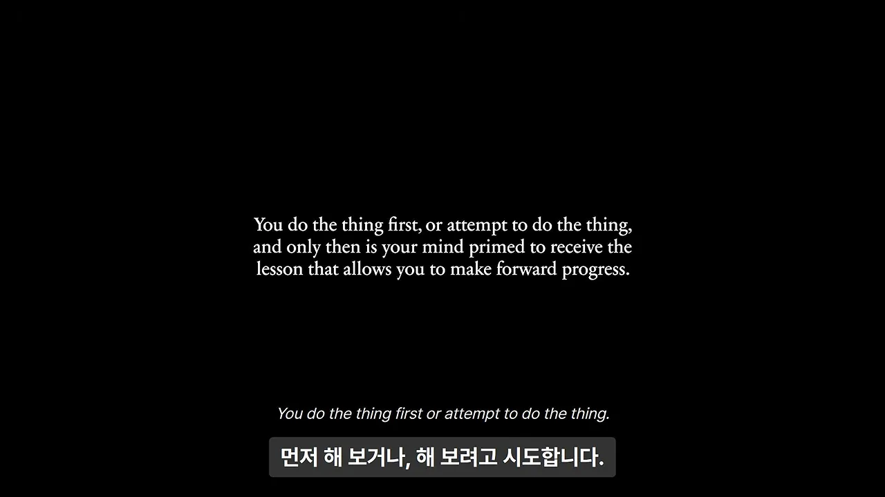
그다음에 만드는 것, 1인 비즈니스
그릇과 배우는 법 다음에 만드는 게 1인 비즈니스예요. 내레이션은 이게 아직 아무것도 시작하지 않은 사람에게 하는 말이라고 짚어요. 근거는 아래 화면의 시소 그림이에요. 사람 하나가 시소 끝을 눌러 반대편의 큰 주황 상자를 들어 올려요. 꼬리표는 '뉴스레터·유튜브·팟캐스트', 아래 문장은 'The internet is permissionless leverage.'예요.
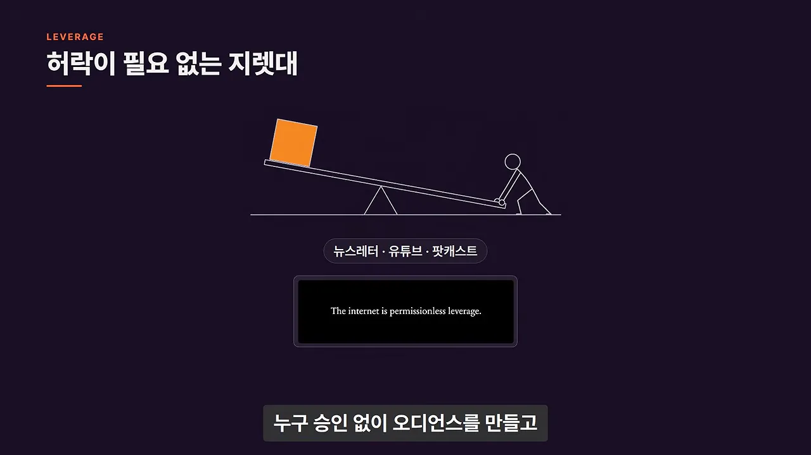
여기서 그가 말하는 크리에이터는 인플루언서나 개인 브랜드가 아니에요. 가치를 만드는 사람이에요. 아래 그림이 그 흐름이에요. 왼쪽 사람이 엉킨 실뭉치에서 줄을 뽑고, 가운데 사람이 그 줄을 당기고, 오른쪽 사람의 탁자에는 포장된 선물이 놓였어요. 꼬리표 '문제 → 제품·서비스'처럼, 문제를 풀고 그 해결책을 남이 돈을 낼 만한 형태로 만드는 사람이에요.
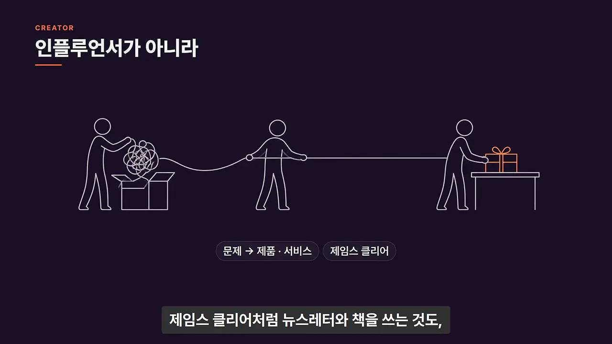
그는 제임스 클리어를 예로 들어요. 개인 브랜드가 있긴 하지만, 실제로 하는 일은 뉴스레터와 책과 콘텐츠를 써서 자기 작업을 더 많은 사람에게 보여 주는 거라고요.
AI 를 쓰기 시작하는 순서
그릇, 배우는 법, 사업까지 왔으니 이제 AI 가 어디에 들어오는지예요. 그는 대부분이 AI 를 슬롭 생성기나 새로운 검색엔진 정도로만 안다고 말해요. 실제로는 소프트웨어, 랜딩 페이지, 퍼널, 앱, 도구처럼 인터넷에서 뭔가를 하는 데 필요한 걸 만들어 달라고 할 수 있어요.
그는 직접 해 보라고 권해요. Claude 를 열고 Code 탭을 누른 뒤, 할 일 앱처럼 만들고 싶은 걸 떠올려 "이걸 너랑 어떻게 만들 수 있어?" 하고 물어보래요. 이름 때문에 겁먹을 수 있지만 그냥 채팅창이라고요. 가면서 "가장 좋은 방법이 뭐야?"라고 묻고, 결정은 내가 하고, 모르는 걸 AI 가 하면 가르쳐 달라고 해요. 하루, 이틀, 사흘이면 "아, 이제 알겠다" 싶은 앱이 나온다고 해요.
"그래 봐야 AI 슬롭이잖아요"
예상되는 반론에 그는 "맞아요"라고 답해요. 대부분이 거기서 멈추기 때문이에요. 아래 화면의 문장처럼, 사람들은 반복이 있다는 걸 몰라요. 첫 시도는 AI 가 있든 없든 형편없어요.
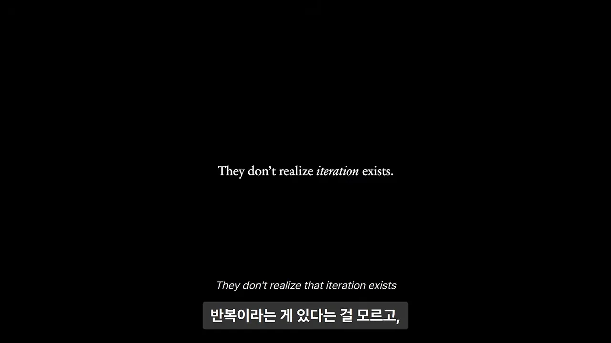
그는 모바일 앱 수는 어느 때보다 많지만 앱 사용량은 거의 그대로라는 점도 들어요. 그리고 GTA(Grand Theft Auto) 6 을 만드는 회사 CEO(Chief Executive Officer) 가 팟캐스트에서 했다는 말을 전해요. 10년 전에도 게임은 마음만 먹으면 배워서 만들 수 있었지만 안 만들었고, 만들었어도 히트작은 안 됐을 거라는 거예요. GTA 6 비슷한 걸 만들어도 유통이 되고, 사람들 손에 쥐여 주고, 그 규모의 회사를 운영하는 건 별개예요. AI 는 거대한 지렛대일 뿐이고, 사업의 나머지는 여전히 직접 배우고 해내야 해요.
내레이션은 이 반복을 아래 화면으로 보여 줘요. 찌그러진 항아리가 수정을 거칠수록 반듯해지고, 마지막 주황 항아리에 '99% 위로'가 붙었어요. 그의 말로는 랜딩 페이지는 거친 초안에서 시작해 미세하게 고쳐 가야 효과가 나고, 소프트웨어는 버그투성이에서 시작해 고치고 또 고쳐야 시장의 앱 99%보다 나아져요.
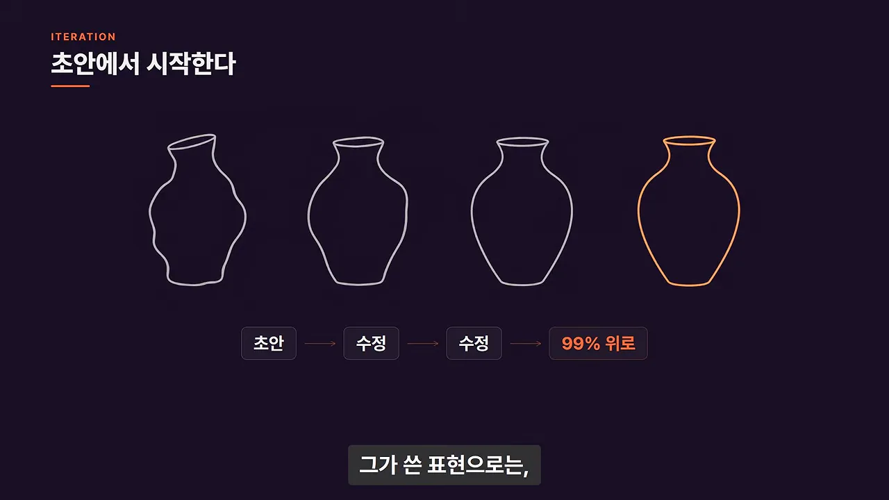
이 끈기가 없는 걸 그는 '주체성이 낮다'고 표현해요. 아래 화면의 네 단계가 주체성이 높은 사람이 하는 순서예요. 계획이 서도록 묻고, 무작위 추측이 아니라 내가 고르고 통제한 비전을 AI 가 실행하게 하고, 가치가 생길 때까지 반복해요. 오른쪽 '결과물 수준 = 사람 수준'은 슬롭도 누군가 내보내기로 고른 것이라는 뜻이에요.
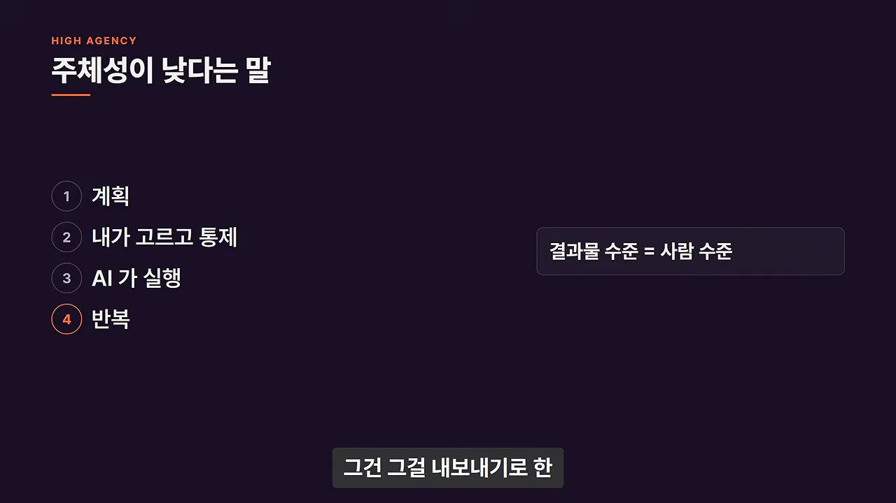
AI 로 무엇이든 시작하는 세 단계
마지막으로 그는 짧은 시작 안내를 줘요. 셋을 한 줄로 놓으면 이래요.
첫째, 원하는 것과 좋은 결과가 어떤 모습인지 알아요. 아래 화면의 꼬리표처럼 마케팅·제품·세일즈·유통은 예전과 똑같이 필요하고, 성공까지 몇 년의 반복이 드는 것도 그대로예요. 사업을 할 줄 모르면 AI 가 알아서 완벽하게 해 주길 기대하게 돼요. 그래서 가장 좋은 출발점은 AI 를 '맞춤형 학습 도구'로 쓰는 거예요. 상품 기획이나 카피라이팅, 소셜 미디어를 AI 로 먼저 배워요.
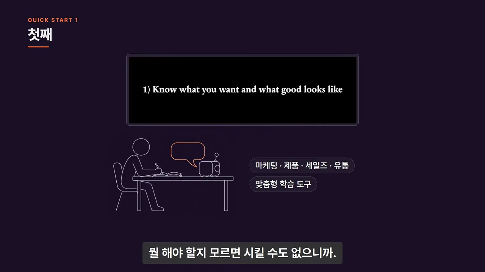
둘째, 터무니없이 높은 기준을 가져요. AI 결과가 다 슬롭인 건 첫 초안을 최종본으로 다뤄서예요. 디자인 하나, 단어 하나, 문장 하나까지 여전히 손봐야 해요. 아래 두 화면이 이어서 나와요. 왼쪽 '둘째' 화면에서 사람은 책상 위 결과물을 들여다보며 고치고 있어요. 오른쪽 화면은 AI 를 로봇 그림과 함께 '천재가 아니라 도구'로 정리해요.
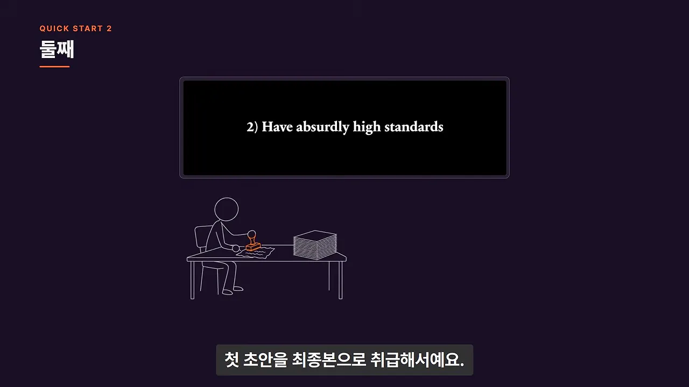
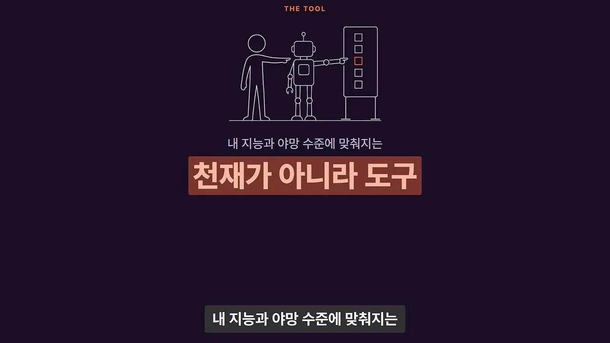
셋째, 나를 AI 로 대체해 봐요. 그는 AI 를 배우는 가장 좋은 방법이 내 일을 자동화해서 나를 일에서 밀어내 보는 거라고 해요. 그러면 뭐가 아직 자동화되고 뭐가 안 되는지 금방 알게 되고, 그다음에야 사업과 그릇의 어느 부분을 AI 에 맡길지 고를 수 있어요. 그가 실제로 나눈 방식은 이래요.
| AI 에 맡기는 일 | 직접 하는 일 |
|---|---|
| 랜딩 페이지와 퍼널 만들기 — 좋은 게 뭔지 알아서 초안을 원하는 수준까지 이끌 수 있어요 | 뉴스레터, 게시물, 대본 쓰기 — 글쓰기 과정을 좋아하고, 글의 가치는 독자가 판단하기 때문이에요 |
| 많은 정보 훑기 — 유튜브 영상, 트윗 중 뜨는 것과 통하는 것을 조사해 전략을 세워요 |
글을 직접 쓰는 이유가 흥미로워요. 코드는 최종 사용자가 보지 않아요. 도움이 되는지만 신경 써요. 반면 글은 독자가 직접 읽으니, 직접 써야 전달하는 가치를 세밀하게 조절할 수 있다는 거예요.
어디서 시작할지 모르겠다면, 하루 동안 하는 일을 시간대별로 다 적어서 AI 에 주고 프롬프트, 스킬, 도구, 소프트웨어로 반복 가능한 과정이 될 만한 게 뭔지 물어보래요. 그렇게 만든 자동화도 첫 초안이라 처음엔 쓸모없어 보일 거예요. 그건 AI 를 디지털 직원으로 대하지 않아서예요. 새 직원이 처음부터 다 알지 못하듯, 원하는 방식을 단계별로 가르치고 주고받아야 해요.
And then boom, you have the repeatable process.
그러면 짠, 반복 가능한 과정이 생겨요.
— 원래 영상 (이 영상 21:44 부근)
정리하면
내레이션은 영상 전체를 다섯 장의 카드로 묶어요. 아래 화면의 '현실의 절반', '한 그릇', '심리·분야·도구', '목표 먼저', '첫 초안'이 차례로 이 영상의 요지예요. 다 거부하는 것도, 다 맡기는 것도 현실의 절반을 버리는 일이에요. 관심사를 한 그릇에 담고, 도구 자체에 정체성을 두지 않아요. 목표를 먼저 세우고, AI 는 첫 초안을 주는 도구로 써요.
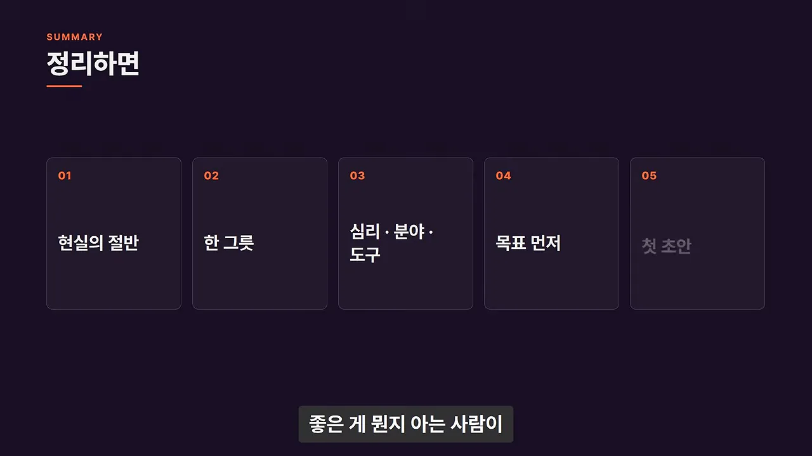
마지막으로 내레이션은 그가 영상 앞부분에서 한 말을 다시 꺼내요. 사람들은 AI 가 우리를 기계처럼 만들까 걱정하지만, 지난 200년이 이미 기계처럼 살도록 훈련받은 시간이었다는 거예요. 그래서 관심사가 여러 개인 사람에게 과장도 흥분도 없이 지금이 가장 좋은 시기라고 말해요.